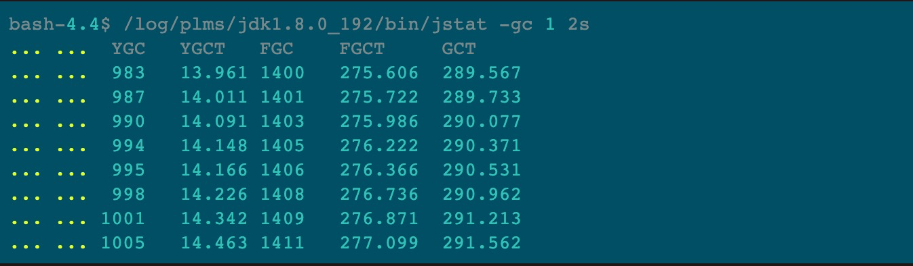
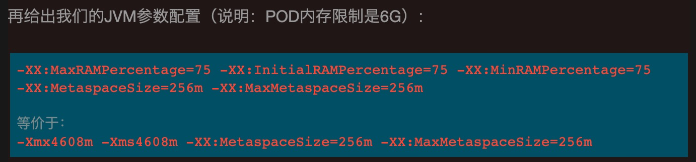

记录一次GC问题
最近在开发的时候发现开发的服务器时常触发GC，几乎每秒一次，到底是什么导致了呢？
/app/jdk1.8.0_192/bin/jstat -gc 1 2s

这样就容易理解多了，看看FGC那一列：几乎每1秒都有一次FGC（说明，笔者这个服务用的是默认的PS垃圾回收器，所以FGC这一列的值一定是FullGC的次数）。而且，再看FGCT这一列，停顿时间那是相当恐怖。那么会是什么原因呢？
MaxRAMPercentage、InitialRAMPercentage、MinRAMPercentage。这三个参数是JDK8U191为适配Docker容器新增的几个参数，类比Xmx、Xms，至于-XX:InitialRAMFraction、-XX:MaxRAMFraction、-XX:MinRAMFraction已经被标记为deprecated 。这几个参数的好处是什么呢？Docker容器模式下，我们可以给每个JVM实例所属的POD分配任意大小的内存上限。比如，给每个账户服务分配4G，给每个支付服务分配8G。如此一来，启动脚本就不好写成通用的了，指定3G也不是，指定6G也不是。但是，有了这三个新增参数，我们就可以在通用的启动脚本中指定75%（-XX:MaxRAMPercentage=75 -XX:InitialRAMPercentage=75 -XX:MinRAMPercentage=75）。那么，账户服务就相当于设置了-Xmx3g -Xms3g。而支付服务相当于设置了-Xmx6g -Xms6g，是不是很赞。

原因分析
再回到前面那一段完整的GC日志（jstat的输出结果），我们分析命令结果输出时这个JVM的一些情况：
1.S0/S1区容量为170496K（对应S0C/S1C两列）；
2.Eden区容量为171008K（对应EC列）；
3.Old区容量为1024000K（对应OC列）；
4.Metaspace容量为70M；
根据各个区的容量大小，发现和JVM参数配置的4.5G内存出入非常大。整个堆的大小缩容了很多，从4.5G缩小到现在的大概1.5G（170496K2+171008K+1024000K+70M ≈ 1.5G），WHY ?
如果对默认的PS垃圾回收器有一定了解的同学，可能大概知道问题所在了。没错，就是参数*-XX:+UseAdaptiveSizePolicy**的锅。这个参数在PS前提下默认是开启的，其作用是自动调整堆的大小，以及对象从S区晋升到Old区的年龄阈值（threshold），调节threshold逻辑为：判断Young GC和Full GC消耗的时间差：
如果Young gc > 1.1 * Full GC，threshold就会一直减少。
如果1.1* Young GC < Full GC，threshold就会一直增加。
也就是说，如果Young GC比较频繁，那么threshold可能会一直减小，直到最小值1，这时候S区的对象很容易晋升到Old区，导致Old区空间涨幅过快而触发Full GC的频率也加快。另外，这个参数是如何调整堆的大小就不在这里介绍了，因为很复杂，我也不知道，哈哈哈：